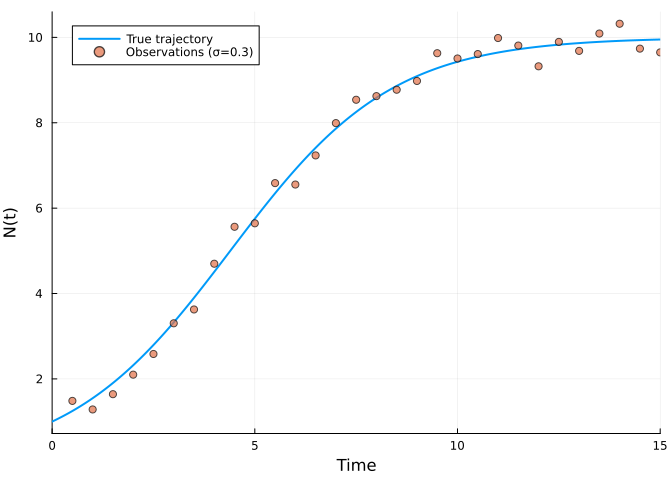
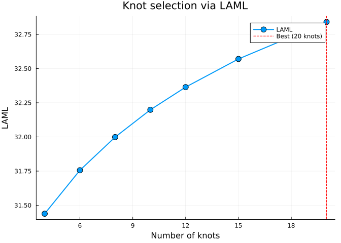
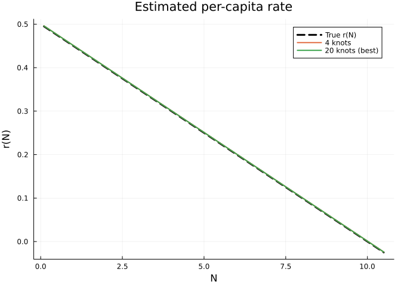
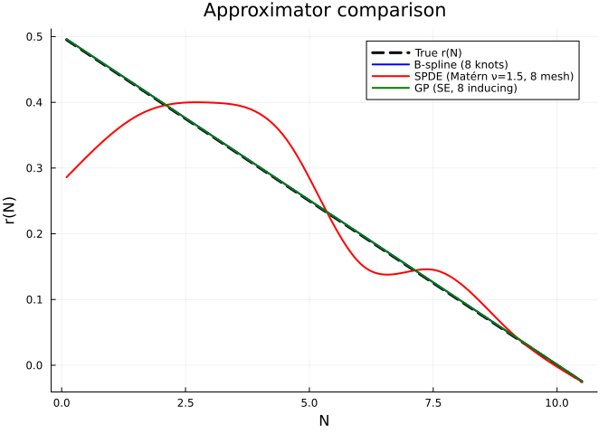
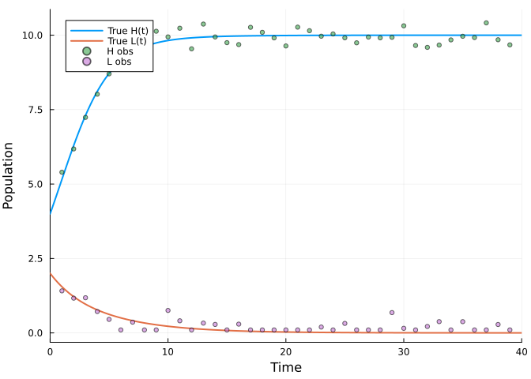
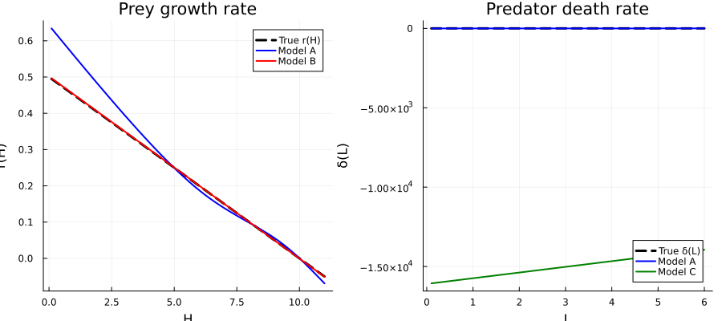
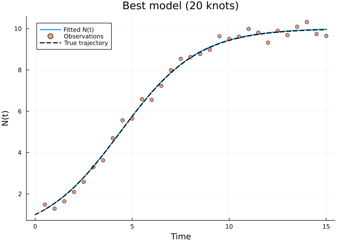
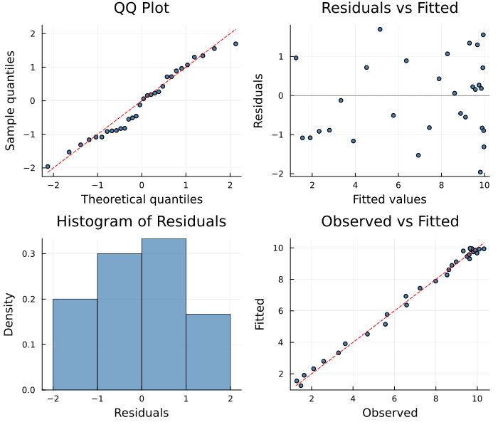

Model Selection with Marginal Likelihood
Overview
When fitting a partially specified model, several modelling choices must be made:
- How many knots (or basis functions) should we use for a B-spline approximator?
- Which approximator type best captures the unknown function — B-splines, SPDE, or GP?
- Which functions in the model should be treated as unknown?
The Laplace Approximate Marginal Likelihood (LAML) provides a principled criterion for answering all three questions. LAML integrates out the unknown function coefficients via a Laplace approximation to the marginal likelihood:
\[\mathcal{V}(\lambda) = \ell(\hat{\boldsymbol\beta}) - \tfrac{1}{2}\hat{\boldsymbol\beta}'\mathbf{S}_\lambda\hat{\boldsymbol\beta} + \tfrac{1}{2}\log|\mathbf{S}_\lambda|_+ - \tfrac{1}{2}\log|\mathbf{H}| + \tfrac{M_p}{2}\log(2\pi)\]
where $\mathbf{S}_\lambda$ is the penalty matrix scaled by the smoothing parameter $\lambda$, $|\cdot|_+$ denotes the pseudo-determinant (the product of the positive eigenvalues, since $\mathbf{S}_\lambda$ is rank deficient), $\mathbf{H}$ is the Hessian of the penalized log-likelihood, and $M_p$ is the penalty null-space dimension. For Gaussian data with unknown $\sigma^2$ this reduces to profiled REML.
Which field to select on. The criterion value $\mathcal{V}$ at the returned fit is exposed as sol.convergence.laml, and it is maximized — larger is better. This is the quantity every table below reports and every selection below uses. It is not sol.objective, which for LAML is the final penalized objective $\tfrac{1}{2}(\|\mathbf{y}-\hat{\mathbf{y}}\|^2 + \hat{\boldsymbol\beta}'\mathbf{S}_\lambda\hat{\boldsymbol\beta})$ — a measure of penalized fit that carries no complexity term, so ranking models by it simply rewards whichever model fits hardest. Two further caveats: convergence.laml is NaN when a fit has no penalized term or the criterion evaluation failed (the helper below treats NaN as the worst score), and it exists only on LAML solutions — GCVSolver reports convergence.gcv/convergence.ncv (both minimized), and CollocationLAML exposes no comparable criterion at all.
This vignette demonstrates LAML-based model selection on two example systems: logistic growth and Lotka–Volterra predator–prey.
Setup
using PartiallySpecifiedModels
using PartiallySpecifiedModels: solve
using OrdinaryDiffEq
using Plots
using Random
using DataFrames
using Printf
Random.seed!(42)
# LAML is a MAXIMIZED criterion, and `sol.convergence.laml` is NaN when a
# fit has no penalized term or the criterion evaluation failed. Selecting
# with a bare `argmax` would be unreliable in that case, so treat NaN as
# the worst possible score.
best_by_laml(v) = argmax([isnan(x) ? -Inf : x for x in Float64.(v)])
# A LAML score is only meaningful if the fit it came from is itself sound. A
# runaway λ can collapse a spline onto nothing (EDF → 0), which removes the
# unknown function from the model entirely — and such a degenerate fit can post
# a very large LAML score. Note `converged` does NOT catch this; the
# `stationarity` diagnostic does. Section 3 has a live example.
is_comparable(sol) = isfinite(sol.convergence.laml) && sol.edf > 0.5 &&
isfinite(sol.convergence.stationarity) &&
sol.convergence.stationarity < 1e3is_comparable (generic function with 1 method)Logistic Growth with Unknown Per-Capita Rate
Data generation
We consider logistic growth where the per-capita growth rate $r(N)$ is treated as unknown:
\[\frac{dN}{dt} = r(N) \cdot N\]
The true per-capita rate is linear: $r(N) = 0.5\,(1 - N/10)$, giving a carrying capacity of $K = 10$.
30×1 Matrix{Float64}:
1.4850697682783507
1.28432364973933
1.6421516203358695
2.099718141520716
2.583777532153197
3.302506560365743
3.626350402174367
4.698048204625014
5.5634836375025145
5.644970200453003
⋮
9.98530871405953
9.808508174376694
9.322531197944425
9.89462462579148
9.683743079449224
10.090554453697491
10.319500028628116
9.73668371630828
9.64864965922381plot(sol_true, label="True trajectory", lw=2, xlabel="Time", ylabel="N(t)")
scatter!(data_t, data_N, label="Observations (σ=$σ_obs)", ms=4, alpha=0.7)
PSM dynamics
The partially specified model replaces the known $r(N)$ with an unknown function to be estimated from data:
function logistic!(du, u, p, t)
N = u[1]
du[1] = p.r(N) * N
endlogistic! (generic function with 1 method)Section 1: Knot Selection for B-Spline Approximators
A key modelling choice for B-spline approximators is the number of knots. Too few knots restrict the function space and lead to underfitting; too many create an overly flexible basis that can overfit despite the smoothing penalty. LAML provides a principled way to choose.
We fit the logistic growth model with B-spline approximators using 4 to 20 knots, recording the LAML objective, effective degrees of freedom (EDF), and data-space sum of squares for each.
N_domain = (0.1, 10.5)
knot_counts = [4, 6, 8, 10, 12, 15, 20]
knot_results = []
for nk in knot_counts
uf = BSplineApproximator(:r, N_domain, nk; initial=x -> 0.3)
prob = PSMProblem(logistic!, [1.0], tspan, [uf];
data_times=data_t, data_values=data_vals,
obs_to_state=[1], known_params=(;),
solver=Tsit5())
sol = solve(prob, LAML(maxiters=80, verbose=false))
push!(knot_results, (nk=nk, laml=sol.convergence.laml, edf=sol.edf, ss=sol.data_loss))
endLAML vs number of knots
In principle the criterion balances underfitting (too few knots) against overfitting (too many knots), and one expects a peak at some intermediate knot count. What the table below actually shows is more interesting, and is the standard result for a well-penalized spline: every knot count from 4 to 20 produces the same fit — identical effective degrees of freedom (2.0) and identical data SS (1.753).
The reason is that $\lambda$ is estimated, not fixed. The true $r(N)$ is linear, so LAML drives $\lambda$ up until the fit collapses onto the penalty null space — the straight lines — and that null space is two-dimensional no matter how many knots the basis started with. Extra knots add flexibility that the penalty then removes.
So the knot count is not really a model-selection question here: once the smoothing parameter is estimated, the basis size stops mattering, provided it is generous enough to contain the truth. The LAML values do drift slightly upward with more knots, so argmax formally selects the largest basis, but the differences are small and the fitted function is unchanged — the choice is immaterial rather than important. The practical advice is to pick a basis comfortably larger than you think you need and let the penalty do the work.
laml_vals = [r.laml for r in knot_results]
best_idx = best_by_laml(laml_vals)
best_nk = knot_results[best_idx].nk
plot(knot_counts, laml_vals,
marker=:circle, ms=6, lw=2,
xlabel="Number of knots", ylabel="LAML",
title="Knot selection via LAML",
label="LAML", legend=:topright)
vline!([best_nk], ls=:dash, color=:red, label="Best ($best_nk knots)")
Summary table
println("| Knots | LAML | EDF | Data SS | Selected |")
println("|------:|-----:|----:|--------:|:--------:|")
for r in knot_results
marker = r.nk == best_nk ? " ✓" : ""
@printf("| %d | %.2f | %.1f | %.3f |%s |\n", r.nk, r.laml, r.edf, r.ss, marker)
end| Knots | LAML | EDF | Data SS | Selected |
|---|---|---|---|---|
| 4 | 31.44 | 2.0 | 1.753 | |
| 6 | 31.76 | 2.0 | 1.753 | |
| 8 | 32.00 | 2.0 | 1.753 | |
| 10 | 32.20 | 2.0 | 1.753 | |
| 12 | 32.36 | 2.0 | 1.753 | |
| 15 | 32.57 | 2.0 | 1.753 | |
| 20 | 32.84 | 2.0 | 1.753 | ✓ |
Recovered unknown functions
We plot the estimated $r(N)$ for a few representative knot counts against the truth.
N_grid = range(N_domain[1], N_domain[2], length=200)
r_true = [0.5 * (1.0 - N / 10.0) for N in N_grid]
selected_knots = unique([4, best_nk, 20])
p_uf = plot(N_grid, r_true, lw=3, ls=:dash, color=:black, label="True r(N)",
xlabel="N", ylabel="r(N)", title="Estimated per-capita rate")
for nk in selected_knots
uf = BSplineApproximator(:r, N_domain, nk; initial=x -> 0.3)
prob = PSMProblem(logistic!, [1.0], tspan, [uf];
data_times=data_t, data_values=data_vals,
obs_to_state=[1], known_params=(;),
solver=Tsit5())
sol = solve(prob, LAML(maxiters=80, verbose=false))
r_hat = [sol.unknown_functions[:r](N) for N in N_grid]
lbl = nk == best_nk ? "$nk knots (best)" : "$nk knots"
plot!(p_uf, N_grid, r_hat, lw=2, label=lbl)
end
display(p_uf)
[!NOTE]
All of these curves lie essentially on top of one another, which is the point: with $\lambda$ estimated, the 4-knot and 20-knot bases recover the same linear $r(N)$. The extra knots do not buy extra wiggle, because the penalty removes it. Had we fixed $\lambda$ instead of estimating it, the knot count would have mattered a great deal.
Section 2: Approximator Type Comparison
Different approximator types encode different prior assumptions about the unknown function. We compare three types on the same logistic growth problem, each with 8 basis functions:
- B-spline: Local polynomial basis with a second-derivative roughness penalty.
- SPDE: Matérn covariance via a stochastic PDE discretization ($\nu = 1.5$), giving a stationary GP-like prior.
- GP: Gaussian process with a squared-exponential kernel and inducing-point approximation.
uf_bspline = BSplineApproximator(:r, N_domain, 8; initial=x -> 0.3)
uf_spde = SPDEApproximator(:r, N_domain, 8; nu=1.5, initial=x -> 0.3)
uf_gp = GPApproximator(:r, N_domain, 8; kernel=:sqexp, initial=x -> 0.3)
approx_specs = [
("B-spline (8 knots)", uf_bspline),
("SPDE (Matérn ν=1.5, 8 mesh)", uf_spde),
("GP (SE, 8 inducing)", uf_gp),
]
approx_results = []
approx_solutions = Dict{String, Any}()
for (name, uf) in approx_specs
prob = PSMProblem(logistic!, [1.0], tspan, [uf];
data_times=data_t, data_values=data_vals,
obs_to_state=[1], known_params=(;),
solver=Tsit5())
sol = solve(prob, LAML(maxiters=80, verbose=false))
push!(approx_results, (name=name, laml=sol.convergence.laml, edf=sol.edf, ss=sol.data_loss))
approx_solutions[name] = sol
endComparison table
best_approx_idx = best_by_laml([r.laml for r in approx_results])
println("| Approximator | LAML | EDF | Data SS | Selected |")
println("|:-------------|-----:|----:|--------:|:--------:|")
for (i, r) in enumerate(approx_results)
marker = i == best_approx_idx ? " ✓" : ""
@printf("| %s | %.2f | %.1f | %.3f |%s |\n", r.name, r.laml, r.edf, r.ss, marker)
end| Approximator | LAML | EDF | Data SS | Selected |
|---|---|---|---|---|
| B-spline (8 knots) | 32.00 | 2.0 | 1.753 | ✓ |
| SPDE (Matérn ν=1.5, 8 mesh) | 27.56 | 6.4 | 1.350 | |
| GP (SE, 8 inducing) | 32.00 | 2.0 | 1.753 |
Recovered unknown functions by approximator type
p_approx = plot(N_grid, r_true, lw=3, ls=:dash, color=:black, label="True r(N)",
xlabel="N", ylabel="r(N)", title="Approximator comparison")
colors = [:blue, :red, :green]
for (i, (name, _)) in enumerate(approx_specs)
sol = approx_solutions[name]
r_hat = [sol.unknown_functions[:r](N) for N in N_grid]
plot!(p_approx, N_grid, r_hat, lw=2, color=colors[i], label=name)
end
display(p_approx)
[!NOTE]
This comparison shows exactly why the criterion, and not the data SS, is the right thing to rank on. The SPDE fit achieves the lowest data SS of the three — it fits the observations best — but it does so with more than three times the effective degrees of freedom, and LAML scores it worst. The B-spline and GP fits both settle at EDF 2.0, recovering the linear truth, and score highest.
Ranking by fit alone would have chosen the SPDE; ranking by the marginal likelihood chooses the models that match the truth. That is the complexity penalty doing its job, and it is why
sol.objective— which contains no such penalty — must not be used for model selection.
Section 3: Structural Model Selection
Beyond choosing approximator details, LAML can guide structural model selection — deciding which functions in a multi-species model should be estimated nonparametrically and which should remain parametric.
Lotka–Volterra predator–prey
Consider a predator–prey system with unknown prey growth rate $r(H)$ and predator death rate $\delta(L)$:
\[\begin{aligned} \frac{dH}{dt} &= r(H) \cdot H - \alpha \, H \, L \\ \frac{dL}{dt} &= \alpha \, H \, L - \delta(L) \cdot L \end{aligned}\]
The true functions are $r(H) = 0.5\,(1 - H/10)$ (logistic prey growth) and $\delta(L) = 0.3$ (constant predator mortality).
Data generation
40×2 Matrix{Float64}:
5.39762 1.41211
6.18014 1.16718
7.24009 1.18102
8.01835 0.717484
8.70161 0.453903
9.16875 0.1
9.13464 0.360881
9.90426 0.1
10.1329 0.1
9.94264 0.754143
⋮
9.59146 0.216852
9.66861 0.378471
9.84234 0.1
9.96414 0.377672
9.92057 0.1
10.4144 0.1
9.84722 0.282145
9.67535 0.1
10.5524 0.1plot(sol_lv_true, label=["True H(t)" "True L(t)"], lw=2,
xlabel="Time", ylabel="Population")
scatter!(data_t_lv, data_H, label="H obs", ms=3, alpha=0.6)
scatter!(data_t_lv, data_L, label="L obs", ms=3, alpha=0.6)
Three candidate model structures
We compare three structural models that differ in which functions are treated as unknown:
Model A — Both $r(H)$ and $\delta(L)$ unknown (2 UFs):
function lv_both!(du, u, p, t)
H, L = u
du[1] = p.r(H) * H - 0.01 * H * L
du[2] = 0.01 * H * L - p.δ(L) * L
endlv_both! (generic function with 1 method)Model B — Only $r(H)$ unknown; $\delta$ is a fitted constant (1 UF):
function lv_r_only!(du, u, p, t)
H, L = u
du[1] = p.r(H) * H - 0.01 * H * L
du[2] = 0.01 * H * L - p.δ * L
endlv_r_only! (generic function with 1 method)Model C — Only $\delta(L)$ unknown; $r$ is a fitted constant (1 UF):
function lv_delta_only!(du, u, p, t)
H, L = u
du[1] = p.r * H - 0.01 * H * L
du[2] = 0.01 * H * L - p.δ(L) * L
endlv_delta_only! (generic function with 1 method)Fitting all three structures
H_domain = (0.1, 11.0)
L_domain = (0.1, 6.0)
nk_lv = 8
lv_solver = LAML(maxiters=100, verbose=false)
# Model A: both r(H) and δ(L) unknown
uf_r_A = BSplineApproximator(:r, H_domain, nk_lv; initial=x -> 0.3)
uf_δ_A = BSplineApproximator(:δ, L_domain, nk_lv; initial=x -> 0.3)
prob_A = PSMProblem(lv_both!, u0_lv, tspan_lv, [uf_r_A, uf_δ_A];
data_times=data_t_lv, data_values=data_vals_lv,
obs_to_state=[1, 2], known_params=(;),
solver=Tsit5())
sol_A = solve(prob_A, lv_solver)
# Model B: only r(H) unknown, δ constant
uf_r_B = BSplineApproximator(:r, H_domain, nk_lv; initial=x -> 0.3)
prob_B = PSMProblem(lv_r_only!, u0_lv, tspan_lv, [uf_r_B];
data_times=data_t_lv, data_values=data_vals_lv,
obs_to_state=[1, 2], known_params=(δ=0.3,),
solver=Tsit5())
sol_B = solve(prob_B, lv_solver)
# Model C: only δ(L) unknown, r constant
uf_δ_C = BSplineApproximator(:δ, L_domain, nk_lv; initial=x -> 0.3)
prob_C = PSMProblem(lv_delta_only!, u0_lv, tspan_lv, [uf_δ_C];
data_times=data_t_lv, data_values=data_vals_lv,
obs_to_state=[1, 2], known_params=(r=0.5,),
solver=Tsit5())
sol_C = solve(prob_C, lv_solver)PSMSolution((δ = [-16062.577342910165, -15760.152346849894, -15457.72735078963, -15155.302354729458, -14852.87735866942, -14550.45236260947, -14248.027366549535, -13945.602370489576]), -6.326341023286257e11, 82272.4126450235, 4.232598042395698e-9, [2.3538526683702056e16], [4.211069186413606 44.86645038475608; 4.432891348933726 44.8664563634304; … ; 29.6176995878095 44.867158142001216; 31.177614174949895 44.867201774020735], [5.397618111676317 1.412112277516411; 6.180136366182137 1.1671751794770528; … ; 9.675345953433288 0.1; 10.552385211138148 0.1], [1.0, 2.0, 3.0, 4.0, 5.0, 6.0, 7.0, 8.0, 9.0, 10.0 … 31.0, 32.0, 33.0, 34.0, 35.0, 36.0, 37.0, 38.0, 39.0, 40.0], Dict{Symbol, Any}(:δ => DataInterpolations.CubicSpline{Vector{Float64}, Vector{Float64}, Vector{Float64}, Vector{Float64}, Vector{Float64}, Vector{Float64}, Float64}([-16062.577342910165, -15760.152346849894, -15457.72735078963, -15155.302354729458, -14852.87735866942, -14550.45236260947, -14248.027366549535, -13945.602370489576], [0.1, 0.9428571428571428, 1.7857142857142858, 2.6285714285714286, 3.4714285714285715, 4.314285714285714, 5.1571428571428575, 6.0], Float64[], DataInterpolations.CubicSplineParameterCache{Vector{Float64}}(Float64[], Float64[]), [0.0, 0.8428571428571429, 0.842857142857143, 0.8428571428571427, 0.842857142857143, 0.8428571428571425, 0.8428571428571434, 0.8428571428571425], [0.0, 2.5444500243592775e-11, -1.4817764592922725e-10, -2.1559304245105946e-10, -1.2678101641580016e-10, -1.3202842099970371e-11, 5.38817188333387e-11, 0.0], DataInterpolations.ExtrapolationType.Linear, DataInterpolations.ExtrapolationType.Linear, FindFirstFunctions.Guesser{Vector{Float64}}([0.1, 0.9428571428571428, 1.7857142857142858, 2.6285714285714286, 3.4714285714285715, 4.314285714285714, 5.1571428571428575, 6.0], Base.RefValue{Int64}(1), true), false, false)), (V_beta = [3.6014477902254233e-9 2.8811569639810574e-9 … -7.202971660090793e-10 -1.440587991835432e-9; 2.8811569639810574e-9 2.3666679382786785e-9 … -2.0577719019022334e-10 -7.202662158255216e-10; … ; -7.202971660090793e-10 -2.0577719019022334e-10 … 2.3668226891964864e-9 2.8813426650824257e-9; -1.440587991835432e-9 -7.202662158255216e-10 … 2.8813426650824257e-9 3.601664441510353e-9], sigma2 = 1028.405158117204, converged = true, iterations = 17, reason = :converged_tol, laml_failures = 0, criterion = :working, laml = 2670.8529720669944, stationarity = 2.9264188250739167e41, smoothing_advanced = true))Structural comparison
struct_results = [
("A: r(H) + δ(L) unknown", sol_A),
("B: r(H) unknown, δ const", sol_B),
("C: δ(L) unknown, r const", sol_C),
]
# Score only the fits that pass the soundness check; a degenerate fit is not a
# candidate model, it is a failed one.
scores = [is_comparable(s) ? s.convergence.laml : -Inf for (_, s) in struct_results]
best_struct = argmax(scores)
println("| Model structure | LAML | EDF | Data SS | Sound? | Selected |")
println("|:----------------|-----:|----:|--------:|:------:|:--------:|")
for (i, (name, s)) in enumerate(struct_results)
marker = i == best_struct ? " ✓" : ""
sound = is_comparable(s) ? "yes" : "**no**"
@printf("| %s | %.2f | %.1f | %.3f | %s |%s |\n",
name, s.convergence.laml, s.edf, s.data_loss, sound, marker)
end| Model structure | LAML | EDF | Data SS | Sound? | Selected |
|---|---|---|---|---|---|
| A: r(H) + δ(L) unknown | 99.32 | 4.5 | 3.773 | yes | |
| B: r(H) unknown, δ const | 105.02 | 2.0 | 4.504 | yes | ✓ |
| C: δ(L) unknown, r const | 2670.85 | 0.0 | 82272.413 | no |
Recovered unknown functions
H_grid = range(H_domain[1], H_domain[2], length=200)
L_grid = range(L_domain[1], L_domain[2], length=200)
r_true_lv = [0.5 * (1.0 - H / 10.0) for H in H_grid]
δ_true_lv = fill(0.3, length(L_grid))
p1 = plot(H_grid, r_true_lv, lw=3, ls=:dash, color=:black, label="True r(H)",
xlabel="H", ylabel="r(H)", title="Prey growth rate")
if haskey(sol_A.unknown_functions, :r)
plot!(p1, H_grid, [sol_A.unknown_functions[:r](H) for H in H_grid],
lw=2, color=:blue, label="Model A")
end
plot!(p1, H_grid, [sol_B.unknown_functions[:r](H) for H in H_grid],
lw=2, color=:red, label="Model B")
p2 = plot(L_grid, δ_true_lv, lw=3, ls=:dash, color=:black, label="True δ(L)",
xlabel="L", ylabel="δ(L)", title="Predator death rate")
if haskey(sol_A.unknown_functions, :δ)
plot!(p2, L_grid, [sol_A.unknown_functions[:δ](L) for L in L_grid],
lw=2, color=:blue, label="Model A")
end
plot!(p2, L_grid, [sol_C.unknown_functions[:δ](L) for L in L_grid],
lw=2, color=:green, label="Model C")
plot(p1, p2, layout=(1, 2), size=(900, 400))
[!NOTE]
Since the true predator death rate $\delta$ is constant, LAML should favour Model B (only $r(H)$ unknown). Model C — which fixes $r$ as constant — is the misspecified one, since the true prey growth is nonlinear. Model B is indeed selected, and it is the only one of the three whose fit is sound enough to compare (see the warning below).
[!WARNING]
A criterion is only as good as the fit underneath it
Model C is worth studying rather than skipping past. Its smoothing parameter runs away (λ of order $10^{16}$), the spline collapses to an effective dimension of essentially zero — meaning there is no unknown function left in the model at all — and its data SS is four orders of magnitude worse than Model B’s.
It would be comfortable to blame misspecification: Model C does fix $r$ as constant when the true prey growth is nonlinear. But the table refutes that story. Model A collapses in exactly the same way — same runaway λ, same effective dimension of zero — and Model A is not misspecified: it leaves both functions free and so nests the truth. λ runaway is a failure of the fit, not a verdict on the model, and it can strike the most general model in the set.
And yet Model C posts by far the largest raw LAML score, and its
convergence.convergedflag istrue. Selecting byargmaxon the raw criterion alone would pick the worst model in the set, and the usual convergence flag would not warn you.Two lessons follow. First,
convergedmeans “a stopping criterion fired”, not “the answer is good” — for LAML fits,convergence.stationarityis the diagnostic that exposes this failure, and it differs by tens of orders of magnitude between the sound and the degenerate fits here. Second, a marginal likelihood is only comparable across models when each fit is individually sound; screen the fits first, then rank the survivors. That is whatis_comparabledoes above, and it is why the table carries a “Sound?” column.
Section 4: Diagnostics for the Best Knot Model
We refit the best model from Section 1 and examine its diagnostic plots.
uf_best = BSplineApproximator(:r, N_domain, best_nk; initial=x -> 0.3)
prob_best = PSMProblem(logistic!, [1.0], tspan, [uf_best];
data_times=data_t, data_values=data_vals,
obs_to_state=[1], known_params=(;),
solver=Tsit5())
sol_best = solve(prob_best, LAML(maxiters=80, verbose=false))PSMSolution((r = [0.49604212580635687, 0.46866949361453625, 0.4412968614182097, 0.4139242283030225, 0.38655158885958774, 0.3591789334847004, 0.3318062511697419, 0.30443353153499053, 0.27706076593629847, 0.2496879489565294, 0.2223150789828443, 0.1949421559095273, 0.16756917867961277, 0.14019614488953505, 0.11282304999836537, 0.08544989217518359, 0.058076677122327475, 0.03070341641297978, 0.0033301303734171394, -0.024043159155670596]), 0.8766451532978858, 1.7532840681169435, 2.0001034598716445, [27042.99930533923], [1.2491996012720241; 1.5498286523801708; … ; 9.956411171033194; 9.970262610610684;;], [1.4850697682783507; 1.28432364973933; … ; 9.73668371630828; 9.64864965922381;;], [0.5, 1.0, 1.5, 2.0, 2.5, 3.0, 3.5, 4.0, 4.5, 5.0 … 10.5, 11.0, 11.5, 12.0, 12.5, 13.0, 13.5, 14.0, 14.5, 15.0], Dict{Symbol, Any}(:r => DataInterpolations.CubicSpline{Vector{Float64}, Vector{Float64}, Vector{Float64}, Vector{Float64}, Vector{Float64}, Vector{Float64}, Float64}([0.49604212580635687, 0.46866949361453625, 0.4412968614182097, 0.4139242283030225, 0.38655158885958774, 0.3591789334847004, 0.3318062511697419, 0.30443353153499053, 0.27706076593629847, 0.2496879489565294, 0.2223150789828443, 0.1949421559095273, 0.16756917867961277, 0.14019614488953505, 0.11282304999836537, 0.08544989217518359, 0.058076677122327475, 0.03070341641297978, 0.0033301303734171394, -0.024043159155670596], [0.1, 0.6473684210526316, 1.194736842105263, 1.7421052631578948, 2.289473684210526, 2.836842105263158, 3.3842105263157896, 3.931578947368421, 4.478947368421053, 5.026315789473684, 5.573684210526316, 6.121052631578947, 6.668421052631579, 7.21578947368421, 7.7631578947368425, 8.310526315789474, 8.857894736842105, 9.405263157894737, 9.952631578947368, 10.5], Float64[], DataInterpolations.CubicSplineParameterCache{Vector{Float64}}(Float64[], Float64[]), [0.0, 0.5473684210526316, 0.5473684210526315, 0.5473684210526317, 0.5473684210526313, 0.547368421052632, 0.5473684210526315, 0.5473684210526315, 0.5473684210526315, 0.5473684210526315, 0.5473684210526315, 0.5473684210526315, 0.5473684210526315, 0.5473684210526315, 0.5473684210526324, 0.5473684210526315, 0.5473684210526315, 0.5473684210526315, 0.5473684210526315, 0.5473684210526315], [0.0, -3.4923050777096956e-11, 4.9456430194776e-11, -1.8563901524983247e-8, -5.252262556579902e-8, -9.03870731615937e-8, -1.254279198326705e-7, -1.552632226292697e-7, -1.7398789875103652e-7, -1.777368538935638e-7, -1.7631489027518676e-7, -1.8037084388911575e-7, -1.8673566742121714e-7, -2.0535395566599347e-7, -2.1545210732295715e-7, -1.931070150132481e-7, -1.5819485670069138e-7, -8.842532557082957e-8, 4.6361221297626146e-9, 0.0], DataInterpolations.ExtrapolationType.Linear, DataInterpolations.ExtrapolationType.Linear, FindFirstFunctions.Guesser{Vector{Float64}}([0.1, 0.6473684210526316, 1.194736842105263, 1.7421052631578948, 2.289473684210526, 2.836842105263158, 3.3842105263157896, 3.931578947368421, 4.478947368421053, 5.026315789473684, 5.573684210526316, 6.121052631578947, 6.668421052631579, 7.21578947368421, 7.7631578947368425, 8.310526315789474, 8.857894736842105, 9.405263157894737, 9.952631578947368, 10.5], Base.RefValue{Int64}(1), true), false, false)), (V_beta = [0.0009506186562714479 0.0008808604635089916 … -0.0003024561179392024 -0.0003719455942662261; 0.0008808604635089916 0.0008167844832568271 … -0.0002705840682851388 -0.0003344489935549745; … ; -0.0003024561179392024 -0.0002705840682851388 … 0.0002714689743777475 0.00030338136331988533; -0.0003719455942662261 -0.0003344489935549745 … 0.00030338136331988533 0.00034095587907496553], sigma2 = 0.06261751951848127, converged = true, iterations = 19, reason = :converged_tol, laml_failures = 0, criterion = :working, laml = 32.84149141603538, stationarity = 1.1378007640258957e-6, smoothing_advanced = true))Fitted trajectory
p_traj = plot(sol_best.data_times, sol_best.fitted_values[:, 1], lw=2,
label="Fitted N(t)",
xlabel="Time", ylabel="N(t)", title="Best model ($best_nk knots)")
scatter!(p_traj, data_t, data_N, label="Observations", ms=4, alpha=0.7)
plot!(p_traj, sol_true.t, [sol_true.u[i][1] for i in eachindex(sol_true.u)],
lw=2, ls=:dash, color=:black, label="True trajectory")
p_traj
Residual diagnostics
diag = appraise(sol_best)
p_qq = scatter(diag.qq_theoretical, diag.qq_sample,
xlabel="Theoretical quantiles", ylabel="Sample quantiles",
title="QQ Plot", ms=3, legend=false, color=:steelblue)
mn, mx = extrema(vcat(diag.qq_theoretical, diag.qq_sample))
plot!(p_qq, [mn, mx], [mn, mx], color=:red, ls=:dash, label="")
p_rf = scatter(diag.fitted, diag.residuals,
xlabel="Fitted values", ylabel="Residuals",
title="Residuals vs Fitted", ms=3, legend=false, color=:steelblue)
hline!(p_rf, [0], color=:gray, ls=:dot)
p_hist = histogram(diag.residuals, normalize=:pdf,
xlabel="Residuals", ylabel="Density",
title="Histogram of Residuals", legend=false, color=:steelblue, alpha=0.7)
p_of = scatter(diag.observed, diag.fitted,
xlabel="Observed", ylabel="Fitted",
title="Observed vs Fitted", ms=3, legend=false, color=:steelblue)
mn2, mx2 = extrema(vcat(diag.observed, diag.fitted))
plot!(p_of, [mn2, mx2], [mn2, mx2], color=:red, ls=:dash, label="")
plot(p_qq, p_rf, p_hist, p_of, layout=(2, 2), size=(700, 600))
Durbin–Watson and residual autocorrelation
Durbin-Watson: 1.844
Residual ACF (lags 1–5): [0.026, -0.2, -0.089, -0.234, 0.07]Discussion
Guidelines for LAML-based model selection
Knot selection: Start with a moderate number (6–10) and sweep upwards. Remember LAML is maximized, so look for a peak or — as in Section 1 — a plateau, which is the common outcome once λ is estimated. Unlike cross-validation, LAML does not require held-out data or repeated fitting.
Approximator comparison: LAML enables fair comparison across approximator types because it accounts for effective complexity (EDF), not just the number of parameters. A GP with 8 inducing points may have a very different EDF from a B-spline with 8 knots.
Structural selection: LAML naturally penalises unnecessary complexity. If a function is truly constant, a nonparametric estimate will have low EDF and the LAML penalty for the extra smoothing parameters will make the simpler parametric model preferable.
Caveats: LAML is based on a Laplace approximation and assumes a Gaussian error model (or a well-specified likelihood). For highly non-Gaussian data or multi-modal posteriors, consider the MCMC or ABC approaches in other vignettes.
Relationship to other criteria
The table below situates LAML among the criteria you may know from elsewhere. Only the two marked “implemented” are available in this package — LAML exposes sol.convergence.laml, and GCVSolver exposes sol.convergence.gcv (or .ncv with criterion=:ncv). The package exports no AIC, BIC, WAIC or LOO accessor; those rows are for orientation only, and computing them would be your own work.
| Criterion | Accounts for smoothing? | Requires refitting? | Bayesian? | In this package |
|---|---|---|---|---|
| AIC | No | No | No | No |
| BIC | No | No | No | No |
| GCV | Yes | No | No | Implemented |
| LAML | Yes | No | Yes (approx.) | Implemented |
| WAIC/LOO | Yes | Yes (MCMC) | Yes | No |
Note also that GCV and NCV are minimized while LAML is maximized, so the direction of the comparison flips depending on which solver produced the fit.
LAML and GCV are closely related — both optimise a criterion that balances fit against complexity. LAML has a more natural Bayesian interpretation as an approximate marginal likelihood, while GCV minimises an estimate of prediction error. In practice they often agree; when they differ, LAML tends to be more conservative (fewer EDF).
[!TIP]
See Also
- Vignette 05: Neural Networks — approximator type comparison with neural networks
- Vignette 06: Solver Comparison — solver method comparison
- Vignette 21: GCV — GCV-based smoothing parameter selection
- Vignette 26: SPDE — SPDE approximator details
- Vignette 29: Bootstrap — uncertainty quantification for selected models